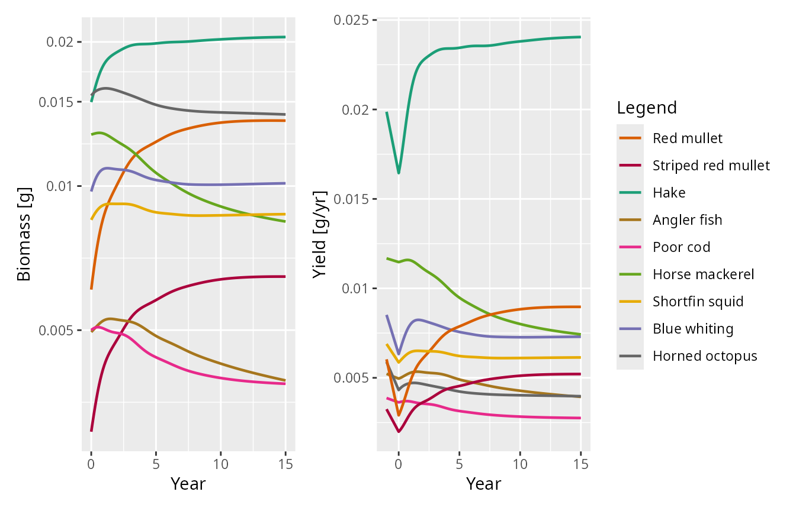
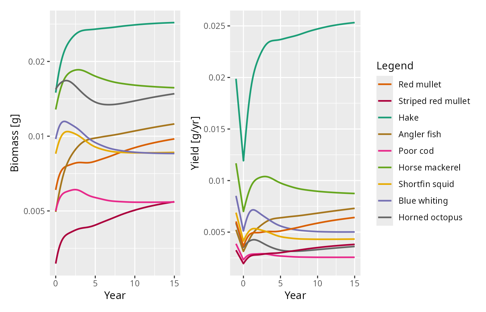

In this document we will use the Northwest Mediterranean mizer model to understand the effect of various changes in fishing policy. We will reproduce the results from the paper “A model of size-spectrum dynamics to estimate the effects of improving fisheries selectivity and reducing discards in Mediterranean mixed demersal fisheries”.
You can download the R markdown source of this document and then change the parameter values to explore how the results depend on those choices.
We start by loading the mizerShelf package and some
others.
Size spectra
Here is a plot of the biomass densities of all species in the model as in Figure 2 in the paper:
plotlySpectra(NWMed_params, resource = FALSE, ylim = c(1e-10, NA))The following plot includes only the target species listed in Table 1 of the paper:
target = c("Red mullet", "Striped red mullet", "Hake", "Angler fish",
"Poor cod", "Horse mackerel", "Blue whiting",
"Horned octopus", "Shortfin squid")
nontarget = c("Starfish", "Murex", "Angular crab", "Harbour crab",
"Black goby", "Large DF worms", "Small DF crustacea",
"Endobenthic pred. crustacea", "Endobenthic pred. worms")
plotlySpectra(NWMed_params, resource = FALSE, species = target,
ylim = c(1e-7, NA), wlim = c(1e-1, 1e4))Parameter choices
Feel free to change these parameters to explore their effect on the results.
Parameters affecting the carrion and detritus dynamics:
detritus_lifetime(NWMed_params) <- 1
carrion_lifetime(NWMed_params) <- 1/365
carrion_human_origin(NWMed_params) <- 0.2The reproduction level affects the sensitivity of a species to changes in fishing. Here we set it to the same value for all species but you can supply a vector with different values for different species.
NWMed_params <- setBevertonHolt(NWMed_params, reproduction_level = 0.5)Change in selectivity
First we explore the effect of changing to a more selective net, with parameters as in Table 3 in the paper.
# Change selectivity ----
params_s <- NWMed_params
gear_params(params_s)["Hake, Main", c("l25", "l50")] <- c(18, 21.5)
gear_params(params_s)["Red mullet, Main", c("l25", "l50")] <- c(15.13, 17.28)
gear_params(params_s)["Striped red mullet, Main", c("l25", "l50")] <- c(15.13, 17.28)
gear_params(params_s)["Angler fish, Main", c("l25", "l50")] <- c(14, 18)
gear_params(params_s)["Poor cod, Main", c("l25", "l50")] <- c(8.1, 9.5)
gear_params(params_s)["Horse mackerel, Main", c("l25", "l50")] <- c(15.2, 17)
gear_params(params_s)["Blue whiting, Main", c("l25", "l50")] <- c(18.8, 22.25)
gear_params(params_s)["Shortfin squid, Main", c("l25", "l50")] <- c(14.2, 16.5)
gear_params(params_s)["Horned octopus, Main", c("l25", "l50")] <- c(14.2, 16.5)We project 15 years into the future under fishing with this new gear with unchanged effort.
sim_s <- project(params_s, t_max = 15, t_save = 0.1)We plot biomasses and Yields for the target species, as in Figure 3 in the paper:
p_bio <- mizer::plotBiomass(sim_s, species = target)
yield <- plotYield(sim_s, species = target, return_data = TRUE)
yield_initial <- data.frame(Year = rep(-1, length(target)),
Yield = getYield(NWMed_params)[target],
Species = target,
Legend = target)
p_yield <- plotDataFrame(rbind(yield_initial, yield), NWMed_params,
ylab = "Yield [g/yr]")
p_bio + p_yield + plot_layout(guides = 'collect')
Alternatively one can look at the relative change in the biomass and yield over time:
plotlyBiomassRelative(sim_s, species = target)## Warning: `plotlyBiomassRelative()` was deprecated in mizerExperimental 3.0.0.
## ℹ Please use `mizer::plotRelative()` instead.
## ℹ For example `plotRelative(getBiomass(sim_original), getBiomass(sim))`.
## This warning is displayed once per session.
## Call `lifecycle::last_lifecycle_warnings()` to see where this warning was
## generated.
plotlyYieldRelative(sim_s, NWMed_params, species = target)## Warning: `plotlyYieldRelative()` was deprecated in mizerExperimental 3.0.0.
## ℹ Please use `mizer::plotRelative()` instead.
## ℹ For example `plotRelative(getYield(object_original), getYield(sim))`.
## This warning is displayed once per session.
## Call `lifecycle::last_lifecycle_warnings()` to see where this warning was
## generated.Here is the relative change in biomass of the non-target species:
plotlyBiomassRelative(sim_s, species = nontarget)Discard reduction
We now implement the landing obligation so that no discarding is taking place for Hake and Red mullet.
params_d <- NWMed_params
species_params(params_d)["Hake", "discard"] <- 0
species_params(params_d)["Red mullet", "discard"] <- 0Again we project this scenario 15 years into the future.
sim_d <- project(params_d, t_max = 15, t_save = 0.1)This leads to only a very minor change in the biomasses of the target species, as shown in Figure 4 in the paper:
plotlyBiomassRelative(sim_d, species = target)The change in the other species is also small:
plotlyBiomassRelative(sim_d, species = nontarget)Effort reduction
We reduce the fishing effort by 40%, which also reduces the gear mortality by the same percentage, and again project 15 years into the future.
params_e <- NWMed_params
initial_effort(params_e) <- 0.6
species_params(params_e)$gear_mort <- species_params(NWMed_params)$gear_mort * 0.6
sim_e <- project(params_e, t_max = 15, t_save = 0.1)We plot the projected biomasses and yield of the target species after the reduction of the fishing effort as in Figure 5 in the paper:
p_bio <- mizer::plotBiomass(sim_e, species = target)
yield <- plotYield(sim_e, species = target, return_data = TRUE)
yield_initial <- data.frame(Year = rep(-1, length(target)),
Yield = getYield(NWMed_params)[target],
Species = target,
Legend = target)
p_yield <- plotDataFrame(rbind(yield_initial, yield), NWMed_params,
ylab = "Yield [g/yr]")
p_bio + p_yield + plot_layout(guides = 'collect')
Again we can look at the relative change:
plotlyBiomassRelative(sim_e, species = target)
plotlyYieldRelative(sim_e, NWMed_params, species = target)In Figure 6 we display the relative change in biomasses of the non-target species:
plotlyBiomassRelative(sim_e, species = nontarget)